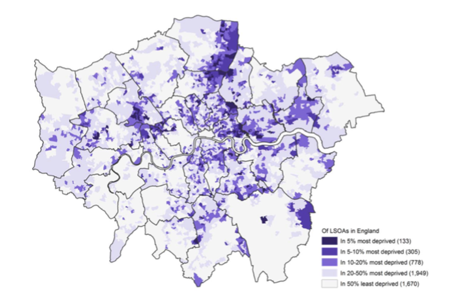
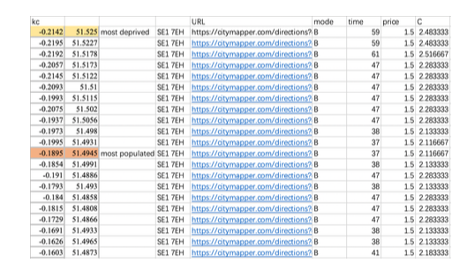

Affordable and efficient public transport doesn't just keep a city moving—it stands as a beacon for sustainable urban development. London, with its iconic red buses and serpentine underground lines, is an epitome of this hustle and bustle. Yet, beneath this facade of seamless movement lies a pertinent question: Are the transport costs fair for all its residents? This question drove Ms. Shuangshuang Jin during her placement at TfL, pushing her to delve into the intricate world of London's public transport.
Public transport, in its essence, is the city's lifeblood, ensuring high transportation volume with minimal environmental footprints. Its dominance alleviates urban congestion, especially vital for a sprawling city like London. However, the real magic unfolds when every resident, regardless of their location in the city, can effortlessly reach their destination without burning a hole in their pocket.
In the complex web of London's public transport system, numerous tools and metrics are used to evaluate accessibility and efficiency. One such widely recognized tool is PTAL, which rates locations by distance from frequent public transport services. As highlighted by Shuangshuang, PTAL brilliantly maps out London's transport connectivity. However, it falls short when considering the nuances of affordability, especially as they change with journey times—a glaring omission when one contemplates the variable fares linked to different transport modes and fluctuating times throughout the day.
Equipped with a robust foundation in urban science and spatiotemporal data analysis from her MSc Urban Informatics Programme, Shuangshuang was well-positioned to understand and analyse these complexities. She recognized that for a transport system to be truly deemed "fair," it must offer more than just accessibility. It should promise uniform transportation costs and consistent travel durations, irrespective of where one resides in the metropolis.
This insight gains even more gravity when one considers London's less privileged residents. For these individuals, often confined by restricted transport choices, equitable access to public transport isn't merely a matter of convenience. Instead, it's an imperative. As Shuangshuang rightly discerns, transport fairness transcends luxury—it is an essential pillar of urban inclusivity and justice.
‘How was the Fairness in short distance and long distance travel?’
To delve into the fairness of short-distance travel, Shuangshuang meticulously assessed the connectivity at the MSOA level to the nearest hospital by car, rail, bus, and underground. Guided by microeconomic theories and choice models, she took into account both monetary costs and time costs. Her focused study within the Haringey borough revealed relatively fair and reasonable connectivity. The generalized costs for each MSOA within the borough exhibited minimal variations, with the most populated areas slightly edging out the most deprived ones in terms of lower costs.
For long-distance travel analysis, Shuangshuang expanded her horizons by selecting a diverse array of destinations. These included St Thomas’ Hospital in central London, the bustling business hub of Canary Wharf in east London, and the iconic leisure venue, Wembley Stadium in west London. Her findings painted a clear picture: densely populated boroughs, typically nestled in the city centre with access to a dense and efficient transportation network, enjoyed distinct advantages over their sparsely populated counterparts.
Shuangshuang’s study, grounded in the principles learned in the MSc Urban Informatics Programme, illuminates the disparities in London’s transport system, highlighting the transport fairness among boroughs. Her research exemplifies the practical application of academic theories, showcasing how the program’s teachings can be leveraged to unravel urban complexities and advocate for equitable solutions.
Her findings during the placement of TfL underscore the importance of bridging accessibility gaps, a core theme of our MSc program, and spotlight the potential for informed urban development. Shuangshuang’s work is not just an academic endeavour; it’s a catalyst for discussions on urban equity, illustrating how the skills and knowledge acquired in the program can contribute to a more inclusive city landscape.
(Editor: Mr. Xiaowei Gao, Dr. Yijing Li)

